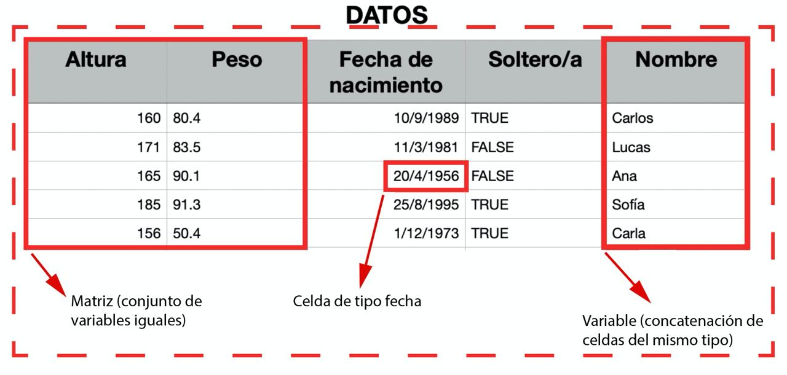
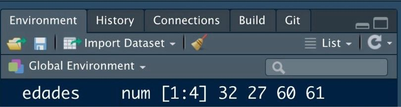

Bioestadística en R
Introducción a la estadística en R
¡Bienvenidos a R!
Dejad vuestras hojas de cálculo y SPSS a un lado
¡Buenas!
Correo: javalv09@ucm.es. Despacho: 722 (3ª planta de la Facultad de Estudios Estadísticos de la UCM).

Javier Álvarez Liébana, de Carabanchel (Bajo).
Licenciado en Matemáticas (UCM). Doctorado en estadística (UGR).
Encargado de la visualización y análisis de datos covid del Principado de Asturias (2021-2022).
Miembro de la Sociedad Española de Estadística e IO y la Real Sociedad Matemática Española.
Actualmente, investigador y docente en la Facultad de Estadística de la UCM. Divulgando por Twitter e Instagram
Objetivos
.png)
Quitarnos el miedo a los errores en programación → a programar se aprende programando
Entender los conceptos básicos de R desde cero → aprender a abstraer ideas y algoritmos
Utilidad de programar → flujos de trabajo reproducibles, transparentes y mantenibles
Introducción al análisis y preprocesamiento de datos →
{tidyverse}Adquirir habilidades en la visualización de datos →
{ggplot2}Adquirir habilidades en la modelización lineal
Planificación
Materiales
- Diapositivas: diapositivas en
Quartodisponibles y actualizadas en https://javieralvarezliebana.es/docencia/biostats-ISCII. En el menú de las diapositivas (abajo a la izquierda) tienes una opción para descargarlas en pdf enTools
Material: cuadernos de trabajo y materiales extras y resúmenes de paquetes
🗃 Datos: datasets que usaremos a lo largo de la asignatura, disponibles en https://javieralvarezliebana.es/docencia/biostats-ISCII/material
📚 Recursos de apoyo: en inglés https://r4ds.had.co.nz/ y en castellano https://cdr-book.github.io/, y https://ivelasq.quarto.pub/intro-to-quarto/ para Quarto.
Clase 1: primeros pasos
Instalando R y RStudio. Primeros pasos: ¿qué tipos de celdas (datos) existen?
Requisitos
Para el curso los únicos requisitos serán:
- Conexión a internet (para la descarga de algunos datos y paquetes).
- Instalar R: será nuestro lenguaje. La descarga la haremos (gratuitamente) desde https://cran.r-project.org/
- Instalar RStudio desde https://posit.co/download/rstudio-desktop/


R vs RStudio


Programaremos como escribimos (castellano, por ejemplo) → R es lenguaje
- Necesitaremos una gramática, un lenguaje (
R)
- Y un entorno, por ejemplo un Word (
RStudio), para escribirlo
Instalación de R
El lenguaje R será nuestra gramática y ortografía (nuestras reglas de juego)
Paso 1: entra en https://cran.r-project.org/ y selecciona tu sistema operativo.
Paso 2: para Mac basta con que hacer click en el archivo .pkg, y abrirlo una vez descargado. Para sistemas Windows, debemos clickar en install R for the first time y después en Download R for Windows. Una vez descargado, abrirlo como cualquier archivo de instalación.
Paso 3: abrir el ejecutable de instalación.
Warning
Siempre que tengas que descargar algo de CRAN (ya sea el propio R o un paquete), asegúrate de tener conexión a internet.
Primera operación
Para comprobar la instalación, tras abrir R, deberías ver el R GUI (Graphical User Interface) con una pantalla blanca similar a esta (consola).

Primer código: a una variable llamada a le asignaremos el valor 1 (escribiremos el código en la consola y daremos «enter»). Tras ello haremos la suma a + b.
Primera operación
Para comprobar la instalación, tras abrir R, deberías ver el R GUI (Graphical User Interface) con una pantalla blanca similar a esta (consola).
Primer código: a una variable llamada a le asignaremos el valor 1 (escribiremos el código en la consola y daremos «enter»). Tras ello haremos la suma a + b.
Primera operación
Para comprobar la instalación, tras abrir R, deberías ver el R GUI (Graphical User Interface) con una pantalla blanca similar a esta (consola).
Primer código: a una variable llamada a le asignaremos el valor 1 (escribiremos el código en la consola y daremos «enter»). Tras ello haremos la suma a + b.
Fíjate que…
En la consola aparece un número [1]: simplemente es un contador de elementos (como contar filas en un Word)
Instalación de R Studio
RStudio será el Word que usaremos para escribir (lo que se conoce como un IDE: entorno integrado de desarrollo).
Paso 1: entra la web oficial de RStudio (ahora llamado Posit) y selecciona la descarga gratuita.
Paso 2: selecciona el ejecutable que te aparezca acorde a tu sistema operativo.
Paso 3: tras descargar el ejecutable, hay que abrirlo como otro cualquier otro y dejar que termine la instalación.
Organización de RStudio
Al abrir RStudio seguramente tengas tres ventanas:
- Consola: es el nombre para llamar a la ventana grande que te ocupa buena parte de tu pantalla. Prueba a escribir el mismo código que antes (la suma de las variables) en ella. La consola será donde ejecutaremos órdenes y mostraremos resultados.
Organización de RStudio
Al abrir RStudio seguramente tengas tres ventanas:
- Environment: la pantalla pequeña (puedes ajustar los márgenes con el ratón a tu gusto) que tenemos en la parte superior derecha. Nos mostrará las variables que tenemos definidas.

Organización de RStudio
Al abrir RStudio seguramente tengas tres ventanas:
- Panel multiusos: la ventana que tenemos en la parte inferior derecha no servirá para buscar ayuda de funciones, además de para visualizar gráficos.

¿Qué es R? ¿Por qué R?

¿Qué es R? ¿Por qué R?

R es la evolución del trabajo de los laboratorios Bell con el lenguaje S, que fue llevado al mundo del software libre por Ross Ihaka y Robert Gentleman en los años 90. La version R 1.0.0 se publicó el 29 de febrero de 2000.
¿Qué es R? ¿Por qué R?
R es el lenguaje estadístico por excelencia, creado por y para estadísticos/as, con 6 ventajas fundamentales frente a Excel, SAS, Stata o SPSS:
- Lenguaje de programación: la obviedad → análisis replicables
- Gratuito: la filosofía de la comunidad de
Res el compartir código bajo copyleft → uso ético de dinero y algoritmos
- Software libre: no solo es gratis sino que permite acceder libremente a código ajeno, incluso al propio código fuente → flexibilidad y transparencia (Free and Open Source Software FOSS)
¿Qué es R? ¿Por qué R?
R es el lenguaje estadístico por excelencia, creado por y para estadísticos/as, con 6 ventajas fundamentales frente a Excel, SAS, Stata o SPSS:
- Lenguaje modular: hemos instalado lo mínimo, pero existen códigos de otras personas que podemos reusar (casi 20 000 paquetes) → ahorro de tiempo e innovación inmediata
- Lenguaje de alto nivel: facilita la programación (como Python) → menor curva de aprendizaje
- Comunidad y empleabilidad: junto con Python es el lenguaje más utilizado en el campo de la estadística y la ciencia de datos en investigación, docencia, empresas (Línea Directa, Mapfre, Telefónica, Orange, Apple, Spotify, Netflix, El País, Civio, HP, etc) y organismos públicos (ISCIII, CNIC, CNIO, INE, IGN, CIS, CEO, DGT, AEMET, RTVE, etc)
¿Por qué programar?
Automatizar → te permitirá automatizar tareas recurrentes.
Replicabilidad → podrás replicar tu análisis siempre de la misma manera.
Flexibilidad → podrás adaptar el software a tus necesidades.
Transparencia → ser auditado por la comunidad.

Idea fundamental: paquetes
Una de las ideas claves de R es el uso de paquetes: códigos que otras personas han implementado para resolver un problema
Idea fundamental: paquetes

Una vez instalado, hay dos manera de usar un paquete (traerlo de la estantería)
- Paquete entero: con
library(), usando el nombre del paquete sin comillas, cargamos en la sesión todo el libro
Te vas equivocar
Durante tu aprendizaje va a ser muy habitual que las cosas no salgan a la primera → te vas equivocar. No solo será importante asumirlo sino que es importante leer los mensajes de error para aprender de ellos.
- Mensajes de error: precedidos de «Error in…» y serán aquellos fallos que impidan la ejecución
Scripts (documentos .R)

Un script será el documento en el que programamos, nuestro archivo .doc (aquí con extensión .R) donde escribiremos las órdenes. Para abrir nuestro primero script, haz click en el menú en File < New File < R Script.
Cuidado
Es importante no abusar de la consola: todo lo que no escribas en un script, cuando cierres, lo habrás perdido.
Cuidado
R es case-sensitive: es sensible a mayúsculas y minúsculas por lo que x y X representa variables distintas.
Ejecutando el primer script
Ahora tenemos una cuarta ventana: la ventana donde escribiremos nuestros códigos. ¿Cómo ejecutarlo?
- Escribimos el código a ejecutar.
- Guardamos el archivo .R haciendo click en
Save current document.
- El código no se ejecuta salvo que se lo indiquemos. Tenemos tres opciones de ejecutar un script:
- Copiar y pegar en consola.
- Seleccionar líneas y
Ctrl+Enter - Activar Source on save a la derecha de guardar: no solo guarda sino que ejecuta el código completo.
Sé organizado: proyectos
De la misma manera que en el ordenador solemos trabajar de manera ordenada por carpetas, en RStudio podemos hacer lo mismo para trabajar de manera eficaz creando proyectos.
Un proyecto será una «carpeta» dentro de RStudio, de manera que nuestro directorio raíz automáticamente será la propia carpeta de proyecto (pudiendo pasar de un proyecto a otro con el menu superior derecho).
Podemos crear uno en una carpeta nueva o en una carpeta ya existente.

💻 Tu turno
📝 Crea en tu ordenador una carpeta de la asignatura y crea dentro de ella el proyecto de RStudio: es ahí donde vas a guardar todo lo que hagamos a lo largo de este curso.Tras crear el proyecto tendrás un archivo R Project. A continuación crea en dicha carpeta dos subcarpetas: datos (es ahí donde irás guardando los distintos datasets que usaremos) y scripts (es ahí donde irás guardando los archivos .R de cada clase)
📝 Dentro del proyecto crea un script ejercicios-clase1.R (dentro de la carpeta scripts). Una vez creado define en él una variable de nombre a y cuyo valor sea -1. Ejecuta el código de las 3 maneras explicadas.
📝 Añade debajo otra línea para definir una variable b con el valor 5. Tras ello guarda la multiplicación de ambas variables. Ejecuta el código como consideres.
📝 Modifica el código inferior para definir dos variables c y d, con valores 3 y -1. Tras ello divide las variables y guarda el resultado.
📝 Asigna un valor positivo a x y calcula su raíz cuadrada; asigna otro negativo y y calcula su valor absoluto con la función abs().
Toma nota
Comandos como sqrt(), abs() o max() son lo que llamamos funciones: líneas de código que hemos «encapsulado» bajo un nombre, y dado unos argumentos de entrada, ejecuta las órdenes (una especie de atajo). En las funciones los argumentos irán SIEMPRE entre paréntesis
📝 Usando la variable x ya definida, completa/modifica el código inferior para guardar en una nueva variable z el resultado guardado en x menos 5.
📝 Define una variable x y asígnale el valor -1. Define otra y y asígnale el valor 0. Tras ello realiza las operaciones a) x entre y; b) raíz cuadrada de x. ¿Qué obtienes?
De la CELDA a la TABLA
¿Qué tipo de dato podemos tener en cada celda de una tabla?
- Celda: dato individual de un tipo concreto.
- Variable: concatenación de valores del mismo tipo (vectores en R).
- Matriz: concatenación de variables del mismo tipo y longitud.
- Tabla: concatenación de variables de distinto tipo pero igual longitud
- Lista: concatenación de variables de distinto tipo y distinta longitud
Pero antes…buenas prácticas
Antes de seguir, es importante que sepas algo cuánto antes: empezar en la programación puede ser frustrante
Al igual que cuando aprendes un idioma nuevo, el primer obstáculo a solventar no es tanto qué decir sino cómo decirlo de manera correcta. Y en R pasa lo mismo, así que vamos a normalizar nuestra forma de programar lo máximo posible para evitar errores futuros.
Pero antes…buenas prácticas
- Tip 2: programa como escribes. Al igual que cuando redactas en castellano, acostúmbrate a incorporar espacios y saltos de línea paranoquedarteciego (es una buena práctica y no un requisito porque
Rno procesa los espacios)
- Tip 3: no seas caótico/a, estandariza nombres. Acostúmbrate siempre a nombrar las variables de la misma manera. El único requisito es que debe empezar siempre por una letra (y sin tildes). La forma más recomendable es la conocida como
snake_case
Pero antes…buenas prácticas
- Tip 4: facilita la lectura y escritura, pon límites. En
Tools < Global Optionspuedes personalizar algunas opciones deRStudio. EnCode < Displaypodemos indicarle enShow marginque los scripts nos muestren un margen “imaginario” (no interacciona con el código) para “forzarnos” a realizar un salto de línea.

Pero antes…buenas prácticas
- Tip 5: el tabulador es tu mejor amigo. En
RStudiotenemos una herramienta maravillosa: si escribes parte del nombre de una variable o función y tabulas,RStudiote autocompleta
Pero antes…buenas prácticas
- Tip 6: ni un paréntesis soltero. Siempre que abras un paréntesis deberás cerrarlo. Para facilitar esta tarea entra en
Tools < Global Options < Code < Displayy activa la opciónRainbow parentheses

Pero antes…buenas prácticas
- Tip 7: fíjate en el lateral izquierdo. No solo podrás ver la línea de código por la que vas sino que, en caso de estar cometiendo un error de sintaxis, el propio
RStudiote avisará.

- Tip 8: intenta trabajar siempre por proyectos (para esta clase, crea un script
clase2.Ren el proyecto que creamos en la anterior clase)
Ver más tips en https://r4ds.had.co.nz/workflow-basics.html#whats-in-a-name
Celdas: tipos de datos
¿Existen variables más allá de los números en la ciencia de datos? Piensa por ejemplo en los datos que podrías guardar de una persona:
- A la pregunta «¿estás matriculado en la Facultad?» la respuesta será lo que llamamos una variable lógica (
TRUEsi está matriculado oFALSEen otro caso).
- Su fecha de nacimiento será precisamente eso, una fecha.
Variables numéricas
El dato más sencillo (ya lo hemos usado) serán las variables numéricas. Para saber la clase de dato en R de una variable tenemos la función class()
Variables numéricas
El dato más sencillo (ya lo hemos usado) serán las variables numéricas. Para saber la clase de dato en R de una variable tenemos la función class()
Para saber su tipología (naturaleza o formato) variable tenemos typeof()
[1] "double"[1] "integer"Fíjate que…
En R tenemos una colección de funciones que empiezan por as.x() y que sirven como funciones de conversión: un dato que era de un tipo, lo convertimos a tipo x.
Variables numéricas
Además de los números «normales» tendremos el valor más/menos infinito codificado como Inf o -Inf
Variables numéricas
Con las variables numéricas podemos realizar las operaciones aritméticas de una calculadora: sumar (+)…
Variables de texto
Imagina que además de la edad de una persona queremos guardar su nombre: ahora la variable será de tipo character
Las cadenas de texto son un tipo con el que obviamente no podremos hacer operaciones aritméticas (sí otras operaciones como pegar o localizar patrones).
Recuerda que…
Las variables de tipo texto (character o string) van SIEMPRE entre comillas: no es lo mismo TRUE (valor lógico, binario) que "TRUE" (texto).
Primera función: paste
Como hemos comentado R llamaremos función a un trozo de código encapsulado bajo un nombre, y que depende de unos argumentos de entrada. Nuestra primera función será paste(): dadas dos cadenas de texto nos permite pegarlas.
Primera función: paste

¿Cómo saber qué argumentos necesita una función? Escribiendo en consola ? paste te aparecerá una ayuda en el panel multiusos.
En dicha ayuda podrás ver en su cabecera que argumentos ya tiene asignados por defecto la función
Primera función: paste
Los argumentos (y su detalle) también pueden ser consultado tabulando (detras una coma).

Funciones: argumentos por defecto
Es muy importante entender el concepto de argumento por defecto de una función en R: es un valor que la función usa pero a veces podemos no ver porque ya tiene un valor asignado.
[1] "Javier Álvarez"[1] "Javier Álvarez"Toma nota
El operador = lo reservaremos para asignar argumentos dentro de funciones. Para todas las demás asignaciones usaremos <-
Primer paquete: glue
Una forma más intuitiva de trabajar con textos es usar el paquete {glue}: lo primero que haremos será «comprar el libro» (si nunca lo hemos hecho). Tras ello cargamos el paquete
Con la función glue() de dicho paquete podemos usar variables dentro de cadenas de texto. Por ejemplo, «la edad es de … años», donde la edad está guardada en una variable.
Variables lógicas
Otro tipo fundamental serán las variables lógicas o binarias (dos valores):
TRUE: verdadero guardado internamente como un 1.FALSE: falso guardado internamente como un 0.
Variables lógicas
Como veremos en breve, las variables lógicas en realidad puede tomar un tercer valor: NA o dato ausente, representando las siglas de not available, y será muy habitual encontrarlo dentro de una base de datos.
Condiciones lógicas
Los valores lógicos suelen ser resultado de evaluar condiciones lógicas. Por ejemplo, imaginemos que queremos comprobar si una persona se llama Javi.
Con el operador lógico == preguntamos sí lo que tenemos guardado a la izquierda es igual que lo que tenemos a la derecha: es una pregunta
Fíjate que…
No es lo mismo <- (asignación) que == (estamos preguntando, es una comparación lógica).
Condiciones lógicas
Además de las comparaciones «igual a» frente «distinto», también comparaciones de orden como menor que <, mayor que >, <= o >=.
¿Tiene la persona menos de 32 años?
Variables de fecha
Un tipo de datos muy especial: los datos de tipo fecha.
Parece una simple cadena de texto pero debería representar un instante en el tiempo. ¿Qué debería suceder si sumamos un 1 a una fecha?
Las fechas NO pueden ser texto: debemos convertir la cadena de texto a fecha.
Variables de fecha
Una vez instalado, de todos los paquetes (libros) que tenemos, le indicaremos que nos cargue ese concretamente.
Para convertir a tipo fecha usaremos la función as_date() del paquete {lubridate} (por defecto en formato yyyy-mm-dd)
Variables de fecha
En as_date() el formato de fecha por defecto es yyyy-mm-dd así si la cadena de texto no se introduce de manera adecuada…
Para cualquier otro formato debemos especificarlo en el argumento opcional format = ... tal que %d representa días, %m meses, %Y en formato de 4 años y %y en formato de 2 años.
Variables de fecha
En dicho paquete tenemos funciones muy útiles para manejar fechas:
- Con
today()podemos obtener directamente la fecha actual.
Resúmenes de paquetes

Amplia contenido
Tienes un resumen en pdf de los paquetes más importantes en la carpeta correspondiente en el campus
💻 Tu turno
Intenta realizar los siguientes ejercicios sin mirar las soluciones
📝 Define una variable que guarde tu edad (llamada edad) y otra con tu nombre (llamada nombre)
📝 Comprueba con dicha variable edad si NO tiene 60 años o si se llama "Ornitorrinco" (debes obtener variables lógicas como resultado)
📝 ¿Por qué el código inferior da error?
📝 Define otra variable llamada hermanos que responda la pregunta «¿tienes hermanos?» y otra variable que almacene tu fecha de nacimiento (llamada fecha_nacimiento).
📝 Define otra variable con tus apellidos (llamada apellidos) y usa glue() para tener, en una sola variable llamada nombre_completo, tu nombre y apellidos separando nombre y apellido por una coma
Vectores: concatenar
Cuando trabajamos con datos normalmente tendremos columnas que representan variables: llamaremos vectores a una concatenación de celdas (valores) del mismo tipo (lo que sería una columna de una tabla).
La forma más sencilla es con el comando c() (c de concatenar), y basta con introducir sus elementos entre paréntesis y separados por comas
Tip
Un número individual x <- 1 (o bien x <- c(1)) es en realidad un vector de longitud uno –> todo lo que sepamos hacer con un número podemos hacerlo con un vector de ellos.
Vectores: concatenar

Secuencias numéricas
El vector más famoso será el de tipo numérico, y en concreto, las conocidas como secuencias numéricas (por ejemplo, los días del mes), usadas para, entre otras cosas, indexar bucles.
El comando seq(inicio, fin) nos permite crear una secuencia numérica desde un elemento inicial hasta uno final, avanzando de uno en uno.
Secuencias numéricas
Un atajo es el comando 1:n, que nos devuelve lo mismo que seq(1, n)
Si el elemento inicial es mayor que el final, entenderá que la secuencia es en orden decreciente.
Secuencias numéricas
Otras veces nos interesará definir una secuencia con una longitud concreta
[1] 1.000000 9.166667 17.333333 25.500000 33.666667 41.833333 50.000000Incluso puede nos interese generar un vector de n elementos repetidos
Vectores de caracteres
Un vector es una concatenación de elementos del mismo tipo, pero no tienen porque ser necesariamente números. Vamos a crear una frase de ejemplo.
Vectores de caracteres
¿Qué sucederá si concatenamos elementos de diferente tipo?
Fíjate que como todos tienen que ser del mismo tipo, lo que hace R es convertir todo a texto, violando la integridad del dato
Operaciones con vectores
Con los vectores numéricos podemos hacer las mismas operaciones aritméticas que con los números → un número es un vector (de longitud uno)
¿Qué sucederá si sumamos o restamos un valor a un vector?
Suma de vectores
Los vectores también pueden interactuar entre ellos, así que podemos definir, por ejemplo, sumas de vectores (elemento a elemento)
Dado que la operación (por ejemplo, una suma) se realiza elemento a elemento, ¿qué sucederá si sumamos dos vectores de distinta longitud?
Comparar vectores
Una operación muy habitual es preguntar a los datos mediante el uso de condiciones lógicas. Por ejemplo, si definimos un vector de temperaturas…
¿Qué días hizo menos de 22 grados?
Nos devolverá un vector lógico, en función de si cada elemento cumple o no la condición pedida (de igual longitud que el vector preguntado)
Comparar vectores
Las condiciones lógicas pueden ser combinadas de dos maneras:
- Intersección: todas las condiciones concatenadas se deben cumplir (conjunción y con
&) para devolver unTRUE
- Unión: basta con que al menos una se cumpla (conjunción o con
|)
Acceder a elementos
Otra operación muy habitual es la de acceder a elementos. La forma más sencilla es usar el operador [i] (acceder al elemento i-ésimo)
Dado que un número no es más que un vector de longitud uno, esta operación también la podemos aplicar usando un vector de índices a seleccionar
Tip
Para acceder al último, sin preocuparnos de cuál es, podemos pasarle como índice la propia longitud x[length(x)]
Eliminar elementos
Otras veces no querremos seleccionar sino eliminar algunos elementos. Deberemos repetir la misma operación pero con el signo - delante: el operador [-i] no selecciona el elemento i-ésimo del vector sino que lo «des-selecciona»
En muchas ocasiones los queremos seleccionar o eliminar en base a condiciones lógicas, en función de los valores, así que pasaremos como índice la propia condición (recuerda, x < 2 nos devuelve un vector lógico)
Sumar vectores
También podemos hacer uso de operaciones estadísticas como por ejemplo sum() que, dado un vector, nos devuelve la suma de todos sus elementos.
¿Qué sucede cuando falta un dato (ausente)?
Sumar vectores
Como hemos comentado que los valores lógicos son guardados internamente como 0 y 1, podremos usarlos en operaciones aritméticas.
Por ejemplo, si queremos averiguar el número de elementos que cumplen una condición (por ejemplo, menores que 3), los que lo hagan tendrán asignado un 1 (TRUE) y los que no un 0 (FALSE) , por lo que basta con sumar dicho vector lógico para obtener el número de elementos que cumplen
Suma acumulada
Otra operación habitual que puede sernos útil es la suma acumulada con cumsum() que, dado un vector, nos devuelve un vector a su vez con el primero, el primero más el segundo, el primero más el segundo más el tercero…y así sucesivamente.
¿Qué sucede cuando falta un dato (ausente)?
En el caso de la suma acumulada lo que sucede es que a partir de ese valor, todo lo acumulado posterior será ausente.
Diferencia
Otra operación habitual que puede sernos útil es la diferencia (con retardo) con diff() que, dado un vector, nos devuelve un vector con el segundo menos el primero, el tercero menos el segundo, el cuarto menos el tercero…y así sucesivamente.
Media
Otras operaciones habituales son la media, mediana, percentiles, etc.
- Media: medida de centralidad que consiste en sumar todos los elementos y dividirlos entre la cantidad de elementos sumados. La más conocida pero la menos robusta: dado un conjunto, si se introducen valores atípicos o outliers (valores muy grandes o muy pequeños), la media se perturba con mucha facilidad.
Percentiles
Otras operaciones habituales son la media, mediana, percentiles, etc.
- Mediana: medida de centralidad que consiste en ordenar los elementos y quedarse con el que ocupa la mitad.
Ordenar vectores
Por último, una acción habitual es saber ordenar valores:
sort(): devuelve el vector ordenado. Por defecto de menor a mayor pero condecreasing = TRUEpodemos cambiarlo
[1] 7 20 23 25 33 41 65 77 81[1] 81 77 65 41 33 25 23 20 7💻 Tu turno
Intenta realizar los siguientes ejercicios sin mirar las soluciones
- Ejercicio 1
- Ejercicio 2
- Ejercicio 3
- Ejercicio 4
- Ejercicio 5
- Ejercicio 6
- Ejercicio 7
- Ejercicio 8
- Ejercicio 9
- Ejercicio 10
- Ejercicio 11
- Ejercicio 12
📝 Define el vector x como la concatenación de los 5 primeros números impares. Calcula la longitud del vector
📝 Accede al tercer elemento de x. Accede al último elemento (sin importar la longitud, un código que pueda ejecutarse siempre). Elimina el primer elemento.
📝 Obtén los elementos de x mayores que 4. Calcula el vector 1/x y guárdalo en una variable.
📝 Crea un vector que represente los nombres de 5 personas, de los cuales uno es desconocido.
📝 Encuentra del vector x de ejercicios anteriores los elementos mayores (estrictos) que 1 Y ADEMÁS menores (estrictos) que 7. Encuentra una forma de averiguar si todos los elementos son o no positivos.
📝 Dado el vector x <- c(1, -5, 8, NA, 10, -3, 9), ¿por qué su media no devuelve un número sino lo que se muestra en el código inferior?
📝 Dado el vector x <- c(1, -5, 8, NA, 10, -3, 9), extrae los elementos que ocupan los lugares 1, 2, 5, 6.
📝 Dado el vector x del ejercicio anterior, ¿cuales tienen un dato ausente? Pista: las funciones is.algo() comprueban si el elemento es tipo algo (tabula)
📝 Define el vector x como la concatenación de los 4 primeros números pares. Calcula el número de elementos de x menores estrictamente que 5.
📝 Calcula el vector 1/x y obtén la versión ordenada (de menor a mayor) de las dos formas posibles
🐣 Caso práctico I: vectores
En el paquete {datasets} (ya instalado por defecto) tenemos diversos conjuntos de datos y uno de ellos es airquality. Debajo te he extraído 3 variables de dicho dataset (fíjate que se hace con datos$variable, ese dolar será importante en el futuro).
Los datos capturan medidas diarias (n = 153 observaciones) de la calidad del aire en Nueva York, de mayo a septiembre de 1973. Se midieron 6 variables: niveles de ozono, radiación solar, viento, temperatura, mes y día.
Intenta responder a las preguntas planteadas en el workbook
Clase 2: primeras bases de datos
Primera base de datos: matrices, data.frame y tibble
Primera base de datos
Cuando analizamos datos solemos tener varias variables de cada individuo: necesitamos una «tabla» que las recopile. La opción más inmediata son las matrices: concatenación de variables del mismo tipo e igual longitud.
Imagina que tenemos estaturas y pesos de 4 personas. ¿Cómo crear un dataset con las dos variables?
Primer intento: matrices
También podemos construir la matriz por filas con la función rbind() (concatenar - bind - por filas - rows), aunque lo recomendable es tener cada variable en columna e individuo en fila como luego veremos.
[,1] [,2] [,3] [,4]
estaturas 150 160 170 180
pesos 63 70 85 95- Podemos «visualizar» la matriz con
View(matriz).
Primer intento: matrices
También podemos «darle vuelta» (matriz transpuesta) con t().
Dado que ahora tenemos dos dimensiones en nuestros datos, para acceder a elementos con [] deberemos proporcionar dos índices separados por comas: índice de la fila y de la columna
Primer intento: matrices
En algunas casos querremos obtener los datos totales de un individuo (una fila concreta pero todas las columnas) o los valores de toda una variable para todos los individuos (una columna concreta pero todas las filas). Para ello dejaremos sin rellenar uno de los índices
estaturas pesos
160 70 [1] 150 160 170 180Primer intento: matrices
También podemos definir una matriz a partir de un vector numérico, reorganizando los valores en forma de matriz (sabiendo que los elementos se van colocando por columnas).
Operaciones con matrices
Con las matrices sucede como con los vectores: cuando aplicamos una operación aritmética lo hacemos elemento a elemento
Operaciones con matrices
También podemos realizar operaciones por columnas/filas sin recurrir a bucles con la función apply(), y le indicaremos como argumentos
- la matriz
- el sentido de la operación (
MARGIN = 1por filas,MARGIN = 2por columnas) - la función a aplicar
- argumentos extra que necesite la función
💻 Tu turno (matrices)
Intenta realizar los siguientes ejercicios sin mirar las soluciones
📝 Modifica el código inferior para definir una matriz x de unos, de 3 filas y 7 columnas.
📝 A la matriz anterior, suma un 1 a cada número de la matriz y divide el resultado entre 5. Tras ello calcula su transpuesta
📝 ¿Por qué el código inferior nos devuelve dicho mensaje de aviso?
📝 Define la matriz x <- matrix(1:12, nrow = 4). Tras ello obtén los datos del primer individuo, los datos de la tercera variable, y el elemento (4, 1).
📝 Define una matriz de 2 variables y 3 individuos tal que cada variable capture la estatura y la edad 3 personas, de manera que la edad de la segunda persona sea desconocida (ausente). Tras ello calcula la media de cada variable (¡nos debe de volver un número!)
Segundo intento: data.frame
Las matrices tienen el mismo problema que los vectores: si juntamos datos de distinto tipo, se perturba la integridad del dato ya que los convierte (fíjate en el código inferior: las edades y los TRUE/FALSE los ha convertido a texto)
Segundo intento: data.frame
Para poder trabajar con variables de distinto tipo tenemos en R lo que se conoce como data.frame: concatenación de variables de igual longitud pero que pueden ser de tipo distinto.
Segundo intento: data.frame
Dado que un data.frame es ya un intento de «base de datos» las variables no son meros vectores matemáticos: tienen un significado y podemos (debemos) ponerles nombres que describan su significado
Segundo intento: data.frame
¡TENEMOS NUESTRO PRIMER CONJUNTO DE DATOS! (estrictamente no podemos hablar de base de datos pero de momento como lo si fuesen). Puedes visualizarlo escribiendo su nombre en consola o con View(tabla)

Acceso a variables
Si queremos acceder a sus elementos, al ser de nuevo datos tabulados, podemos acceder como en las matrices (no recomendable): de nuevo tenemos dos índices (filas y columnas, dejando libre la que no usemos)
edad estado nombre f_nacimiento
2 24 NA laura 1992-04-01[1] "javi" "laura" "lucía"[1] 24
Pero también tiene las ventajas de una «base» de datos : podemos aceder a las variables por su nombre (lo recomendable ya que las variables pueden cambiar de posición y ahora sí tienen un significado), poniendo el nombre de la tabla seguido del símbolo $ (con el tabulador, nos aparecerá un menú de columnas a elegir)
Funciones de consulta
names(): nos muestra los nombres de las variables
Añadir variable
Si tenemos uno ya creado y queremos añadir una columna es tan simple como usar la función data.frame() que ya hemos visto para concatenar la columna. Vamos añadir por ejemplo una nueva variable, el número de hermanos de cada individuo.
Intento final: tibble
Las tablas en formato data.frame tienen algunas limitaciones. La principal es que no permite la recursividad: imagina que definimos una base de datos con estaturas y pesos, y queremos una tercera variable con el IMC
Error in data.frame(estatura = c(1.7, 1.8, 1.6), peso = c(80, 75, 70), : objeto 'peso' no encontradoEn adelante usaremos el formato tibble (data.frame mejorado) del paquete {tibble}
Intento final: tibble
datos_tb <-
tibble("estatura" = c(1.7, 1.8, 1.6), "peso" = c(80, 75, 70), "IMC" = peso / (estatura^2))
datos_tb# A tibble: 3 × 3
estatura peso IMC
<dbl> <dbl> <dbl>
1 1.7 80 27.7
2 1.8 75 23.1
3 1.6 70 27.3Las tablas en formato tibble nos permitirá una gestión más ágil, eficiente y coherente de los datos, con 4 ventajas principales:
- Metainformación: si te fijas en la cabecera, nos dice ya automáticamente el número de filas y columnas, y el tipo de cada variable
- Recursividad: permite definir las variables secuencialmente (como hemos visto)
Intento final: tibble
- Consistencia: si accedes a una columna que no existe avisa con un warning
- Por filas: crear por filas (copiar y pegar de una tabla) con
tribble()
Tip
El paquete {datapasta} nos permite copiar y pegar tablas de páginas web y documentos sencillos
Recapitulando
- Cada celda puede ser de un tipo diverso: números, texto, fechas, valores lógicos, etc
- Un vector es una concatenación de celdas (las futuras columnas de nuestras tablas) –> En
Rpor defecto las operaciones se hacen elemento a elemento
- Una matriz nos permite concatenar variables del MISMO tipo y MISMA longitud –> datos tabulados
- Un data.frame nos permite concatenar variables de DISTINTO tipo y MISMA longitud –> usaremos tibble como una opción mejorada de base de datos
💻 Tu turno (tb/df)
Intenta realizar los siguientes ejercicios sin mirar las soluciones
📝 Carga del paquete {datasets} el conjunto de datos airquality (variables de la calidad del aire de Nueva York desde mayo hasta septiembre de 1973). ¿Es el conjunto de datos airquality de tipo tibble? En caso negativo, conviértelo a tibble (busca en la documentación del paquete en https://tibble.tidyverse.org/index.html).
📝 Una vez convertido a tibble obtén el nombre de las variables y las dimensiones del conjunto de datos. ¿Cuántas variables hay? ¿Cuántos días se han medido?
📝 Modifica el código inferior para filtrar solo los datos del mes de agosto. ¿Cómo indicarle que queremos solo las filas que cumplan una condición concreta? (pista: en realidad todo son vectores “formateados”)
📝 Selecciona aquellos datos que no sean ni de julio ni de agosto.
📝 Modifica el siguiente código para quedarte solo con las variable de ozono y temperatura (sin importar qué posición ocupen)
📝 Selecciona los datos de temperatura y viento de agosto.
🐣 Caso práctico I: tibble
Del paquete {Biostatistics} usaremos el conjunto de datos pinniped, que guarda los datos de peso de cuerpo y cerebro (desagregado por sexo y mono/poligamia) de 33 especies de mamíferos marinos.
Species Male_brain_g Female_brain_g Male_mass_Kg
1 Monachus schauinslandi 370.0 NA 173.0
2 Monachus monachus 480.0 480.0 260.0
3 Mirounga angustirostris 700.0 640.0 2275.0
4 Mirounga leonina 1431.3 898.8 3510.0
5 Leptonychotes weddelli 535.0 637.5 450.0
6 Ommatophoca rossi 425.0 530.0 153.8
7 Lobodon carcinophagus 578.2 538.8 220.5
8 Hydrurga leptonyx 765.0 660.0 324.0
9 Cystophora cristata 480.0 430.0 343.2
10 Erignathus barbatus NA 460.0 312.5
11 Halichoerus grypus 342.5 272.5 233.0
12 Phoca groenlandica 297.5 252.5 145.0
13 Phoca fasciata 257.5 240.0 94.8
14 Phoca largha 257.5 250.0 97.0
15 Phoca caspica 165.0 160.0 70.5
16 Phoca sibirica 185.0 190.0 89.5
17 Phoca hispida 229.3 220.0 84.0
18 Phoca vitulina 362.3 265.0 97.1
19 Zalophus californianus 405.0 361.5 244.5
20 Eumetopias jubatus 747.5 575.0 1000.0
21 Otaria byronia 546.3 470.0 300.0
22 Neophoca cinerea 440.0 337.5 300.0
23 Phocarctos hookeri 417.5 370.0 364.0
24 Callorhinus ursinus 355.0 302.5 140.0
25 Arctocephalus townsendi NA NA 112.0
26 Arctocephalus philippii 415.0 NA 140.0
27 Arctocephalus galapagoensis 302.5 280.0 64.5
28 Arctocephalus australis 350.0 265.0 91.0
29 Arctocephalus forsteri 340.0 300.0 125.0
30 Arctocephalus gazella 360.0 320.0 155.0
31 Arctocephalus tropicalis 322.5 330.0 152.5
32 Arctocephalus pusillus 401.3 337.5 263.0
33 Odobenus rosmarus 1303.0 1340.5 1233.0
Female_mass_Kg Mate_type
1 272.2 mono
2 275.0 mono
3 488.0 poly
4 565.7 poly
5 447.0 poly
6 164.0 mono
7 224.0 mono
8 367.0 mono
9 222.5 mono
10 326.0 mono
11 205.8 poly
12 139.0 mono
13 80.4 mono
14 71.3 mono
15 55.0 mono
16 85.0 mono
17 81.2 mono
18 85.2 mono
19 81.0 poly
20 287.5 poly
21 144.0 poly
22 78.6 poly
23 114.7 poly
24 33.3 poly
25 49.6 poly
26 48.1 poly
27 27.4 poly
28 48.5 poly
29 38.1 poly
30 45.0 poly
31 50.0 poly
32 64.1 poly
33 811.5 polyIntenta responder a las preguntas planteadas en el workbook
🐣 Caso práctico II: Taylor Swift
Del paquete {taylor} vamos a usar el conjunto de datos taylor_album_songs para poner en práctico lo aprendido sobre bases de datos y manejo de variables. Intenta responder a las preguntas planteadas en el workbook
# A tibble: 240 × 29
album_name ep album_release track_number track_name artist featuring
<chr> <lgl> <date> <int> <chr> <chr> <chr>
1 Taylor Swift FALSE 2006-10-24 1 Tim McGraw Taylo… <NA>
2 Taylor Swift FALSE 2006-10-24 2 Picture To Bu… Taylo… <NA>
3 Taylor Swift FALSE 2006-10-24 3 Teardrops On … Taylo… <NA>
4 Taylor Swift FALSE 2006-10-24 4 A Place In Th… Taylo… <NA>
5 Taylor Swift FALSE 2006-10-24 5 Cold As You Taylo… <NA>
6 Taylor Swift FALSE 2006-10-24 6 The Outside Taylo… <NA>
7 Taylor Swift FALSE 2006-10-24 7 Tied Together… Taylo… <NA>
8 Taylor Swift FALSE 2006-10-24 8 Stay Beautiful Taylo… <NA>
9 Taylor Swift FALSE 2006-10-24 9 Should've Sai… Taylo… <NA>
10 Taylor Swift FALSE 2006-10-24 10 Mary's Song (… Taylo… <NA>
# ℹ 230 more rows
# ℹ 22 more variables: bonus_track <lgl>, promotional_release <date>,
# single_release <date>, track_release <date>, danceability <dbl>,
# energy <dbl>, key <int>, loudness <dbl>, mode <int>, speechiness <dbl>,
# acousticness <dbl>, instrumentalness <dbl>, liveness <dbl>, valence <dbl>,
# tempo <dbl>, time_signature <int>, duration_ms <int>, explicit <lgl>,
# key_name <chr>, mode_name <chr>, key_mode <chr>, lyrics <list>Clase 3: if-elses, bucles y Quarto
Estructuras condicionales, bucles y Quarto
Estructuras de control
Una estructura de control se compone de una serie de comandos orientados a decidir el camino que tu código debe recorrer
Si se cumple la condición A, ¿qué sucede?
¿Y si sucede B?
¿Cómo puedo repetir una misma expresión (dependiendo de una variable)?
Si has programado antes, quizás te sea familiar las conocidas como estructuras condicionales tales como if (blabla) {...} else {...} o bucles for/while (a evitar siempre que podamos).
Estructura If
Una de las estructuras de control más famosas son las conocidas como estructuras condicionales if.
SI (IF) un conjunto de condiciones se cumple (TRUE), entonces ejecuta lo que haya dentro de las llaves
Por ejemplo, la estructura if (x == 1) { código A } lo que hará será ejecutar el código A entre llaves pero SOLO SI la condición entre paréntesis es cierta (solo si x es 1). En cualquier otro caso, no hará nada.
Estructura If
Nuestra estructura condicional hará lo siguiente: si existe algún menor de edad, imprimirá por pantalla un mensaje.
Estructura If
En caso de que las condiciones no sean ciertas dentro de if() (FALSE), no sucede nada
No obtenemos ningún mensaje porque la condición all(edad >= 18) no es TRUE, así que no ejecuta nada.
Estructura If-else
La estructura if (condicion) { código A } puede combinarse con un else { código B }: cuando la condición no está verificada, se ejecutará el código alternativo B dentro de else { }, permitiéndonos decidir que sucede cuando se cumple y cuando no.
Estructura If-else
Esta estructura if - else puede ser anidada: imagina que queremos ejecutar un código si todos son menores; si no sucede, pero todos son mayores de 16, hacer otra cosa; en cualquier otra cosa, otra acción.
if (all(edad >= 18)) {
print("Todos son mayores de edad")
} else if (all(edad >= 16)) {
print("Hay algún menor de edad pero todos con 16 años o más")
} else { print("Hay alguna persona con menos de 16 años") }[1] "Hay alguna persona con menos de 16 años"Truco
Puedes colapsar las estructuras haciendo click en la flecha a la izquierda que aparece en tu script.
If-else vectorizado
Esta estructura condicional se puede vectorizar (en una sola línea) con if_else() (del paquete {dplyr}), cuyos argumentos son
- la condición a evaluar
- lo que sucede cuando se cumple y cuando no
- un argumento opcional para cuando la condición a evaluar es
NA
Vamos a etiquetar sin son mayores/menores y un “desconocido” cuando no conocemos
[1] "desconocido" "menor" "menor" "mayor" "mayor"
[6] "mayor" "mayor" "mayor" "mayor" En R base existe ifelse(): no deja especificar que hacer con los ausentes pero permite especificar distintos tipos de datos en TRUE y en FALSE.
💻 Tu turno
Intenta realizar los siguientes ejercicios sin mirar las soluciones
📝 ¿Cuál es la salida del siguiente código?
📝 ¿Cuál es la salida del siguiente código?
📝 Modifica el código inferior para que, cuando no se pueda verificar si la raíz cuadrada de un número es menor que 2, devuelva -1
📝 ¿Cuál es son los valores de x e y del código inferior para z <- 1, z <- -1 y z <- -5?
📝 ¿Qué pasaría si ejecutamos el siguiente código? Spoiler: da error. ¿Por qué? ¿Cómo solucionarlo?
📝 ¿Qué sucederá si ejecutamos el código inferior?
📝 Del paquete {lubridate}, la función hour() nos devuelve la hora de una fecha dada, y la función now() nos devuelve fecha y hora del momento actual. Con ambas funciones haz que se imprima por pantalla (cat()) “buenas noches” solo a partir de las 21 horas.
Bucles
Aunque en la mayoría de ocasiones se pueden reemplazar por otras estructuras más eficientes y legibles, es importante conocer una de las expresiones de control más famosas: los bucles.
for { }: permite repetir el mismo código en un número prefijado y conocido de veces.while { }: permite repetir el mismo código pero en un número indeterminado de veces (hasta que una condición deje de cumplirse).
Bucles for
Un bucle for es una estructura que permite repetir un conjunto de órdenes un número finito, prefijado y conocido de veces dado un conjunto de índices.
Vamos a definir un vector x <- c(0, -7, 1, 4) y otra variable vacía y. Tras ello definiremos un bucle for con for () { }: dentro de los paréntesis indicaremos un índice y unos valores a recorrer, dentro de las llaves el código a ejecutar en cada iteración (en este caso, rellenar y como x + 1)
Bucles for
Un bucle for es una estructura que permite repetir un conjunto de órdenes un número finito, prefijado y conocido de veces dado un conjunto de índices.
Vamos a definir un vector x <- c(0, -7, 1, 4) y otra variable vacía y. Tras ello definiremos un bucle for con for () { }: dentro de los paréntesis indicaremos un índice y unos valores a recorrer, dentro de las llaves el código a ejecutar en cada iteración (en este caso, rellenar y como x + 1)
Bucles for
Un bucle for es una estructura que permite repetir un conjunto de órdenes un número finito, prefijado y conocido de veces dado un conjunto de índices.
Vamos a definir un vector x <- c(0, -7, 1, 4) y otra variable vacía y. Tras ello definiremos un bucle for con for () { }: dentro de los paréntesis indicaremos un índice y unos valores a recorrer, dentro de las llaves el código a ejecutar en cada iteración (en este caso, rellenar y como x + 1)
Bucles for
Fíjate que debido a que R funciona de manera vectorial por defecto, el bucle es lo mismo que hacer x + 1 directamente.
Bucles for
Otra opción habitual es indicar los índices de manera «automática»: desde el primero 1 hasta el último (que corresponde con la longitud de x length(x))
Bucles for
Así la estructura general de un bucle for será siempre la siguiente
SIEMPRE sabemos cuántas iteraciones tenemos (tantas como elementos haya en el conjunto a indexar)
Evitando bucles
Como ya hemos aprendido con el paquete{microbenchmark} podemos chequear como los bucles suelen ser muy ineficientes (de ahí que debamos evitarlos en la mayoría de ocasiones
library(microbenchmark)
x <- 1:1000
microbenchmark(y <- x^2,
for (i in 1:100) { y[i] <- x[i]^2 },
times = 500)Unit: nanoseconds
expr min lq mean median
y <- x^2 800 1000 1851.8 1500
for (i in 1:100) { y[i] <- x[i]^2 } 1029800 1079400 1200446.2 1103200
uq max neval cld
1800 48900 500 a
1163300 4554100 500 bBucles for
Podemos ver otro ejemplo de bucle combinando números y textos: definimos un vector de edades y de nombres, e imprimimos el nombre y edad i-ésima.
Bucles for
Aunque normalmente se suelen indexar con vectors numéricos, los bucles pueden ser indexados sobre cualquier estructura vectorial, da igual de que tipo sea el conjunto
Bucles y condicionales
Vamos a combinar las estructuras condicionales y los bucles: usando el conjunto swiss del paquete {datasets}, vamos a asignar NA si los valores de fertilidad son mayores de 80.
Bucles while
Otra forma de crear un bucle es con la estructura while { }, que nos ejecutará un bucle un número desconocido de veces, hasta que una condición deje de cumplirse (de hecho puede que nunca termine). Por ejemplo, vamos a inializar una variable ciclos <- 1, que incrementaremos en cada paso, y no saldremos del bucle hasta que ciclos > 4.
Bucles while
Un bucle while será siempre como sigue
Bucles while
¿Qué sucede cuando la condición nunca es FALSE? Pruébalo tu mismo
Cuidado
Un bucle while { } puede ser bastante «peligroso» sino controlamos bien cómo pararlo.
Bucles while
Contamos con dos palabras reservadas para abortar un bucle o forzar su avance:
break: permite abortar un bucle incluso si no se ha llegado a su final
Bucles while
Contamos con dos palabras reservadas para abortar un bucle o forzar su avance:
next: fuerza un bucle a avanzar a la siguiente iteración
Bucles repeat
Aunque no es tan usado como las opciones anteriores, también contamos con repeat { } que ejecuta un bucle de manera infinita hasta que se indique abortar con un break
Replicate
Aunque no es formalmente un bucle, otra forma de repetir código un número de veces es hacer uso de replicate(): simplemente permite repetir lo mismo n veces
Replicate
La función replicate() se suele usar para generar distintas repeticiones de elementos aleatorios. Por ejemplo, imaginemos que queremos generar 3 muestras de distribuciones normales, en la que cada muestra tendrá 7 elementos. Para generar una se usa rnorm(n = 7) (r de resample, norm de normal, y si no se dice nada es media 0 y desv 1).
[,1] [,2] [,3]
[1,] 0.6204506 -0.384527411 0.4648052
[2,] -1.4530774 0.095637364 0.9358546
[3,] 0.9181088 0.007291665 -0.5095680
[4,] 0.1743544 -1.598358788 -1.0311972
[5,] -0.4198697 -0.667685066 1.3557746
[6,] 1.9342543 0.713613297 -2.5302825
[7,] -0.7983855 -0.316974082 -1.4601614💻 Tu turno
Intenta realizar los siguientes ejercicios sin mirar las soluciones
📝 Modifica el código inferior para que se imprima un mensaje por pantalla si y solo si todos los datos de airquality son con mes distinto a enero
📝 Modifica el código inferior para guardar en una variable llamada temp_alta un TRUE si alguno de los registros tiene una temperatura superior a 90 grados Farenheit y FALSE en cualquier otro caso
📝 Modifica el código inferior para diseñar un bucle for de 5 iteraciones que solo recorra los primeros 5 impares (y en cada paso del bucle los imprima)
🐣 Caso práctico I
Intenta responder a las preguntas planteadas en el workbook donde tendrás que diseñar algunos estudios de simulación haciendo uso de bucles y estructuras condicionales
Clase 4: funciones y ggplot
Funciones y ggplot
Creando funciones
No solo podemos usar funciones predeterminadas que vienen ya cargadas en paquetes, además podemos crear nuestras propias funciones para automatizar tareas. ¿Cómo crear nuestra propia función? Veamos su esquema básico:
Nombre: por ejemplo
name_fun(sin espacios ni caracteres extraños). Al nombre le asignamos la palabra reservadafunction().Definir argumentos de entrada (dentro de
function()).Cuerpo de la función dentro de
{ }.Finalizamos la función con los argumentos de salida con
return().
Creando funciones
No solo podemos usar funciones predeterminadas que vienen ya cargadas en paquetes, además podemos crear nuestras propias funciones para automatizar tareas. ¿Cómo crear nuestra propia función? Veamos su esquema básico:
Nombre: por ejemplo
name_fun(sin espacios ni caracteres extraños). Al nombre le asignamos la palabra reservadafunction().Definir argumentos de entrada (dentro de
function()).Cuerpo de la función dentro de
{ }.Finalizamos la función con los argumentos de salida con
return().
Creando funciones
No solo podemos usar funciones predeterminadas que vienen ya cargadas en paquetes, además podemos crear nuestras propias funciones para automatizar tareas. ¿Cómo crear nuestra propia función? Veamos su esquema básico:
Nombre: por ejemplo
name_fun(sin espacios ni caracteres extraños). Al nombre le asignamos la palabra reservadafunction().Definir argumentos de entrada (dentro de
function()).Cuerpo de la función dentro de
{ }.Finalizamos la función con los argumentos de salida con
return().
Creando funciones
No solo podemos usar funciones predeterminadas que vienen ya cargadas en paquetes, además podemos crear nuestras propias funciones para automatizar tareas. ¿Cómo crear nuestra propia función? Veamos su esquema básico:
Nombre: por ejemplo
name_fun(sin espacios ni caracteres extraños). Al nombre le asignamos la palabra reservadafunction().Definir argumentos de entrada (dentro de
function()).Cuerpo de la función dentro de
{ }.Finalizamos la función con los argumentos de salida con
return().
Creando funciones
arg1, arg2, ...: serán los argumentos de entrada, los argumentos que toma la función para ejecutar el código que tiene dentrocódigo: líneas de código que queramos que ejecute la función.return(var_salida): se introducirán los argumentos de salida.
Importante
Todas las variables que definamos dentro de la función son variables LOCALES: solo existirán dentro de la función salvo que especifiquemos lo contrario.
Creando funciones
Veamos un ejemplo muy simple de función para calcular el área de un rectángulo.
Dado que el área de un rectángulo se calcula como el producto de sus lados, necesitaremos precisamente eso, sus lados: esos serán los argumentos de entrada y el valor a devolver será justo su área (\(lado_1 * lado_2\)).
Creando funciones
Veamos un ejemplo muy simple de función para calcular el área de un rectángulo.
Dado que el área de un rectángulo se calcula como el producto de sus lados, necesitaremos precisamente eso, sus lados: esos serán los argumentos de entrada y el valor a devolver será justo su área (\(lado_1 * lado_2\)).
Creando funciones
Veamos un ejemplo muy simple de función para calcular el área de un rectángulo.
Dado que el área de un rectángulo se calcula como el producto de sus lados, necesitaremos precisamente eso, sus lados: esos serán los argumentos de entrada y el valor a devolver será justo su área (\(lado_1 * lado_2\)).
Uso de funciones
También podemos hacer una definición directa de las variables sin almacenar por el camino.
Uso de funciones
Tip
Aunque no sea necesario, es recomendable hacer explícita la llamada de los argumentos, especificando en el código qué valor es para cada argumento para que no dependa de su orden, haciendo el código más legible
Argumentos por defecto
Imagina ahora que nos damos cuenta que el 90% de las veces usamos dicha función para calcular por defecto el área de un cuadrado (es decir, solo necesitamos un lado). Para ello, podemos definir argumentos por defecto en la función: tomarán dicho valor salvo que le asignemos otro.
¿Por qué no asignar lado_2 = lado_1 por defecto, para ahorrar líneas de código y tiempo?
Argumentos por defecto
Ahora por defecto el segundo lado será igual al primero (si se lo añadimos usará ambos).
Salida múltiple
Compliquemos un poco la función y añadamos en la salida los valores de cada lado, etiquetados como lado_1 y lado_2, empaquetando la salida en una vector.
Salida múltiple
Podemos complicar un poco más la salida añadiendo una cuarta variable que nos diga, en función de los argumentos, si rectángulo o cuadrado, teniendo que añadir en la salida una variable que de tipo caracter (o lógica).
# Definición del nombre de función y argumentos de entrada
calcular_area <- function(lado_1, lado_2 = lado_1) {
# Cuerpo de la función
area <- lado_1 * lado_2
# Resultado
return(c("area" = area, "lado_1" = lado_1, "lado_2" = lado_2,
"tipo" = if_else(lado_1 == lado_2, "cuadrado", "rectángulo")))
}
calcular_area(5, 3) area lado_1 lado_2 tipo
"15" "5" "3" "rectángulo" Problema: al intentar juntar números y texto, lo convierte todo a números. Podríamos guardarlo todo en un tibble() como hemos aprendido o en un objeto conocido en R como listas
Introducción a listas
Veamos un pequeño resumen de los datos que ya conocemos:
vectores: colección de elementos de igual tipo. Pueden ser números, caracteres o valores lógicos, entre otros.
matrices: colección BIDIMENSIONAL de elementos de igual tipo e igual longitud.
data.frame / tibble: colección BIDIMENSIONAL de elementos de igual longitud pero de cualquier tipo.
Las listas serán colecciones de variables de diferente tipo y diferente longitud, con estructuras totalmente heterógeneas (incluso una lista puede tener dentro a su vez otra lista).
Introducción a listas
Vamos a crear nuestra primera lista con list() con tres elementos: el nombre de nuestros padres/madres, nuestro lugar de nacimiento y edades de nuestros hermanos.
Introducción a listas
Si observas el objeto que hemos definido como lista, su longitud del es de 3 ya que tenemos guardados tres elementos: un vector de caracteres (de longitud 2), un caracter (vector de longitud 1), y un vector de números (de longitud 3)
Introducción a listas
Si los juntásemos con un tibble(), al tener distinta longitud, obtendríamos un error.
Introducción a listas
- Acceder por índice: con el operador
[[i]]accedemos al elemento i-ésimo de la lista.
- Acceder por nombre: con
$nombre_elementoaccedemos por su nombre.
Salida múltiple: listas
# Definición del nombre de función y argumentos de entrada
calcular_area <- function(lado_1, lado_2 = lado_1) {
# Cuerpo de la función
area <- lado_1 * lado_2
# Resultado
return(list("area" = area, "lado_1" = lado_1, "lado_2" = lado_2,
"tipo" = if_else(lado_1 == lado_2, "cuadrado", "rectángulo")))
}
calcular_area(5, 3)$area
[1] 15
$lado_1
[1] 5
$lado_2
[1] 3
$tipo
[1] "rectángulo"Orden de los argumentos
Antes nos daba igual el orden de los argumentos pero ahora el orden de los argumentos de entrada importa, ya que en la salida incluimos lado_1 y lado_2.
Recomendación
Funciones: generando conocimiento
Parece una tontería lo que hemos hecho pero hemos cruzado una frontera importante: hemos pasado de consumir conocimiento (código de otros paquetes, elaborado por otros/as), a generar conocimiento, creando nuestras propias funciones.
Las funciones van a ser claves en tu día a día ya que te permitirá automatizar código que vas a repetir una y otra vez: empaquetando ese código bajo un alias (nombre de la función) vas a poder usarlo una y otra vez sin necesidad de programarlo (por lo que hacer el doble de trabajo no implicará trabajar el doble)
Variables locales vs globales
Un aspecto importante sobre el que reflexionar con las funciones: ¿qué sucede si nombramos a una variable dentro de una función a la que se nos ha olvidado asignar un valor dentro de la misma?
Debemos ser cautos al usar funciones en R, ya que debido a la «regla lexicográfica», si una variable no se define dentro de la función, R buscará dicha variable en el entorno de variables.
Variables locales vs globales
Si una variable ya está definida fuera de la función (entorno global), y además es usada dentro de cambiando su valor, el valor solo cambia dentro pero no en el entorno global.
Variables locales vs globales
Si queremos que además de cambiar localmente lo haga globalmente deberemos usar la doble asignación (<<-).
💻 Tu turno
Intenta realizar los siguientes ejercicios sin mirar las soluciones
📝 Modifica el código inferior para definir una función llamada funcion_suma, de forma que dados dos elementos, devuelve su suma.
📝 Modifica el código inferior para definir una función llamada funcion_producto, de forma que dados dos elementos, devuelve su producto, pero que por defecto calcule el cuadrado
📝 Define una función llamada igualdad_nombres que, dados dos nombres, nos diga si son iguales o no. Hazlo considerando importantes las mayúsculas, y sin que importen las mayúsculas. Usa el paquete {stringr}.
Code
# Distinguiendo mayúsculas
igualdad_nombres <- function(persona_1, persona_2) {
return(persona_1 == persona_2)
}
igualdad_nombres("Javi", "javi")
igualdad_nombres("Javi", "Lucía")
# Sin importar mayúsculas (ver también str_equal)
igualdad_nombres <- function(persona_1, persona_2) {
return(str_to_upper(persona_1) == str_to_upper(persona_2))
}
igualdad_nombres("Javi", "javi")
igualdad_nombres("Javi", "Lucía")📝 Crea una función llamada calculo_IMC que, dados dos argumentos (peso y estatura en metros) y un nombre, devuelva una lista con el IMC (\(peso/(estatura_m^2)\)) y el nombre.
📝 Repite el ejercicio anterior pero con otro argumento opcional que se llame unidades (por defecto, unidades = "metros"). Desarrolla la función de forma que haga lo correcto si unidades = "metros" y si unidades = "centímetros".
📝 Crea un tibble ficticio de 7 personas, con tres variables (inventa nombre, y simula peso, estatura en centímetros), y adapta la función calculo_IMC() de forma que obtengamos una cuarta columna con su IMC.
Code
datos <- tibble("nombres" = c("javi", "sandra", "eva", "ana", "carlos", "leo", NA),
"peso" = rnorm(n = 7, mean = 70, sd = 1),
"estatura" = rnorm(n = 7, mean = 168, sd = 5))
# IMPORTANTE. if_else trabaja de manera vectorial, elemento a elemento: la longitud de la
# condición (unidades == "metros" es un vector lógico de longitud uno) debe ser igual que
# lo que le decimos que haga cuando es TRUE y FALSE (en este caso, condicion tiene longitud 1
# pero al aplicarla lo que devuelve es vector de tamaño 7, por eso hay que usar ifelse (sin _))
calculo_IMC <- function(nombre, peso, estatura, unidades = "metros") {
return(list("nombre" = nombre,
"IMC" = peso/(ifelse(unidades == "metros", estatura, estatura/100)^2)))
}
datos |> mutate(IMC = calculo_IMC(nombres, peso, estatura, unidades = "centímetros")$IMC)📝 Crea una función llamada atajo que tenga dos argumentos numéricos x e y. Si ambos son iguales, debes devolver "iguales" y hacer que la función acaba automáticamente (piensa cuándo una función sale). OJO: x e y podrían ser vectores. Si son distintos (de igual de longitud) calcula la proporción de elementos diferentes. Si son distintos (por ser distinta longitud), devuelve los elementos que no sean comunes.
🐣 Caso práctico II: conversor
Para practicar con funciones vamos a crear un completo conversor de temperaturas que, dada una temperatura en Fahrenheit, Celsius o Kelvin, la convierta a cualquiera de las otras
Intenta responder a las preguntas planteadas en el workbook hasta construirlo.
Dataviz
Javier Álvarez Liébana • Máster de Bioinformática (ISCIII)